언리얼 엔진 5로 심리스 오픈월드 지형, Data Layer 동적 레벨, 4인 코옵 레이드 동선을 설계해 왔습니다. 지금은 넷마블네오 신규 프로젝트 다크프리스트(DP)에서 Claude Code·MCP로 만든 AI 레벨 제작 파이프라인을 써서 사냥터와 던전을 설계합니다.
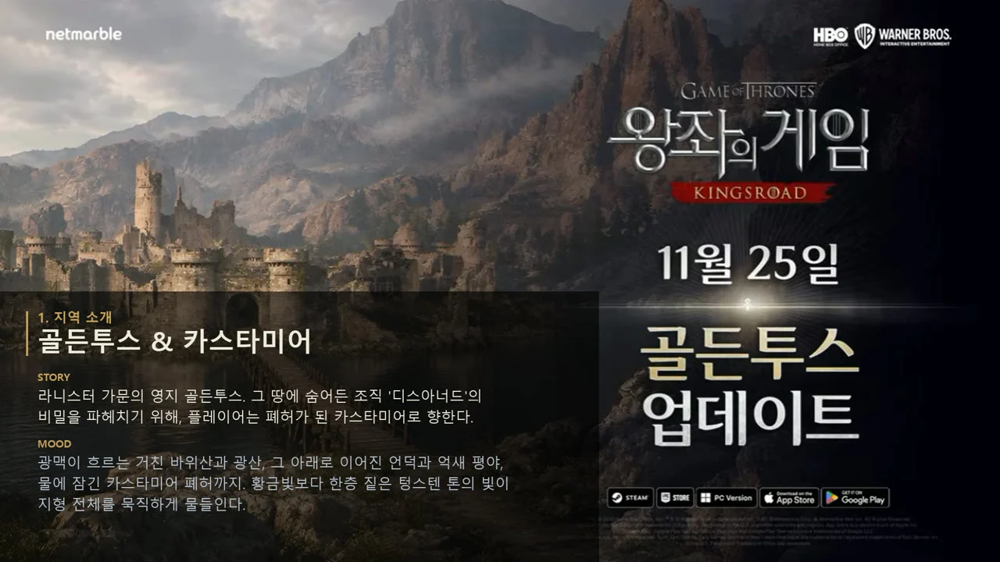


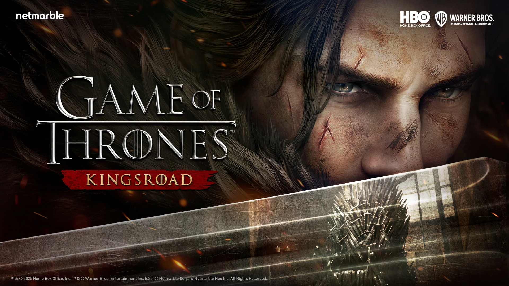
트레일러 재생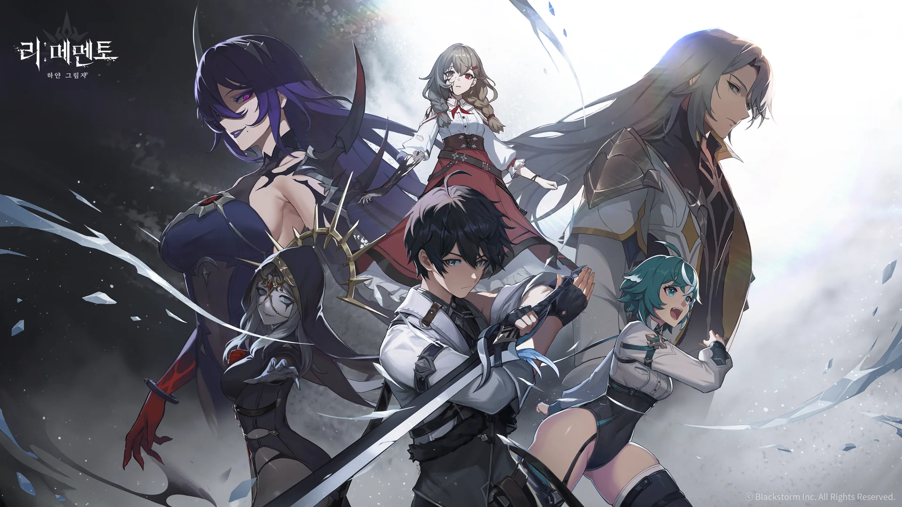
트레일러 재생 트레일러 재생
트레일러 재생 트레일러 재생03
트레일러 재생03


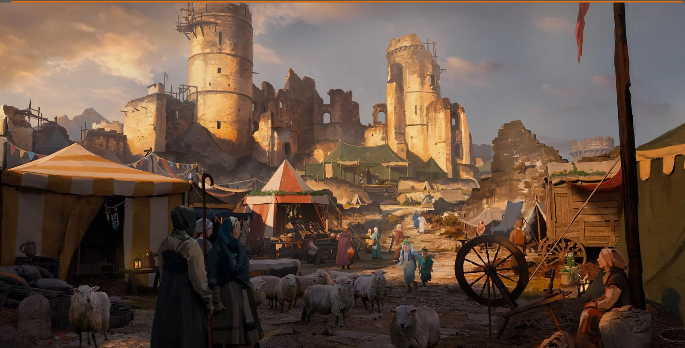


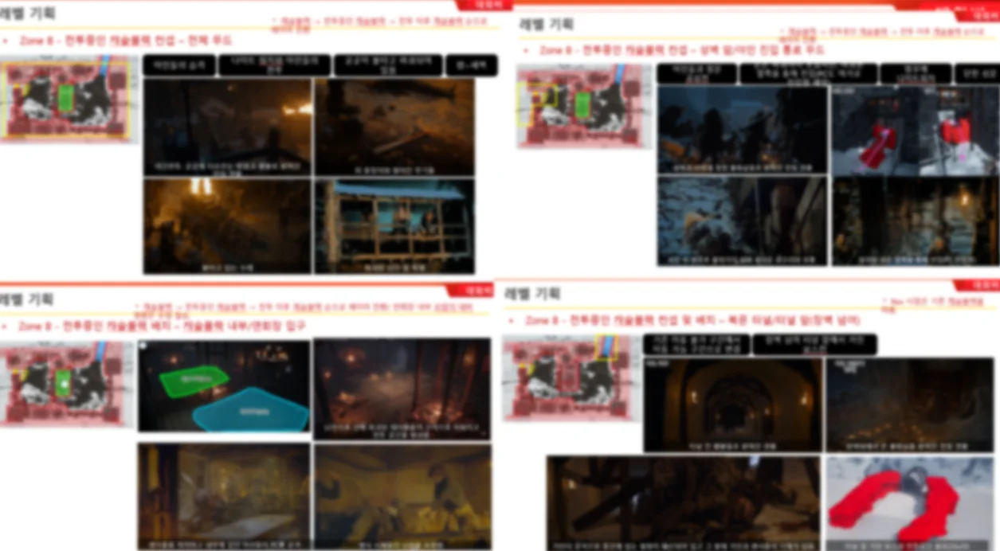

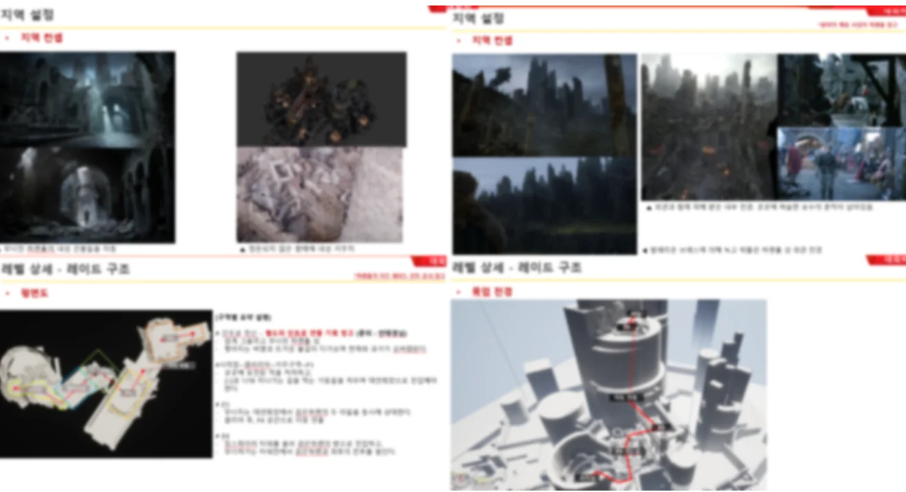
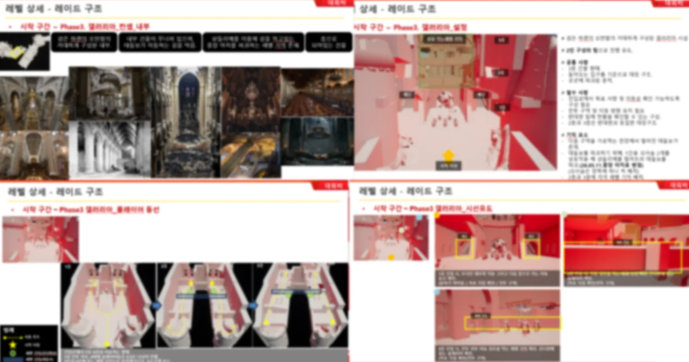
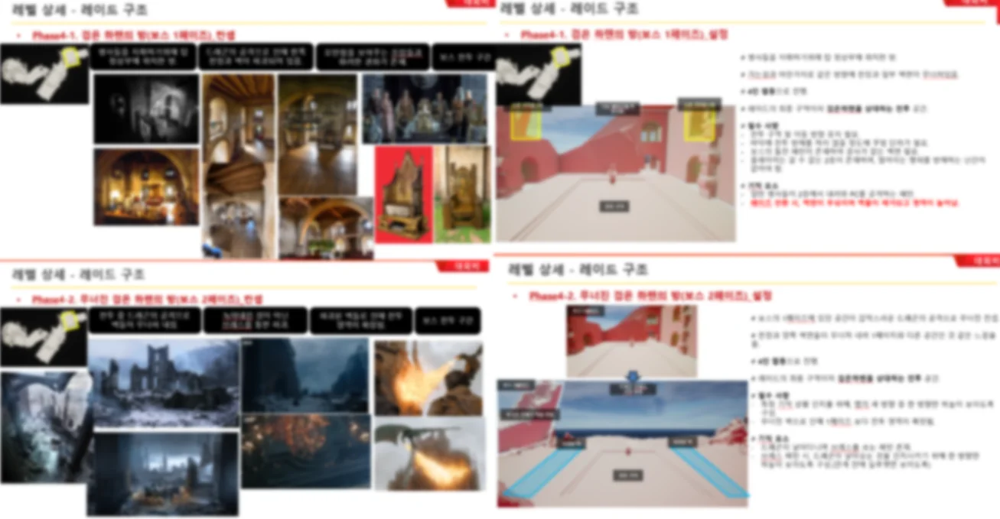

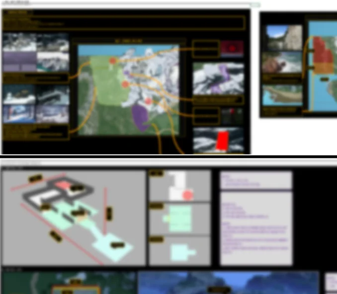


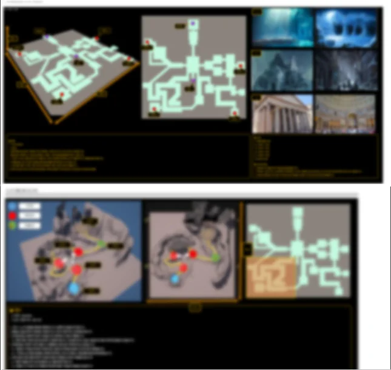
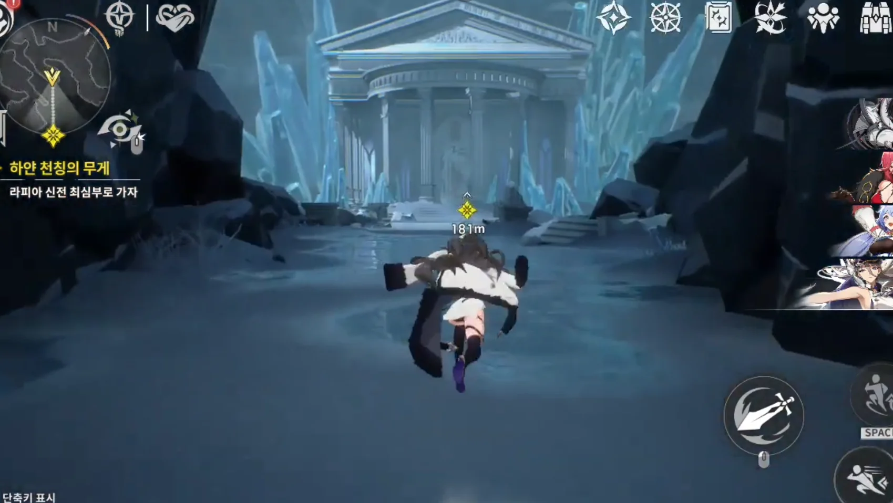


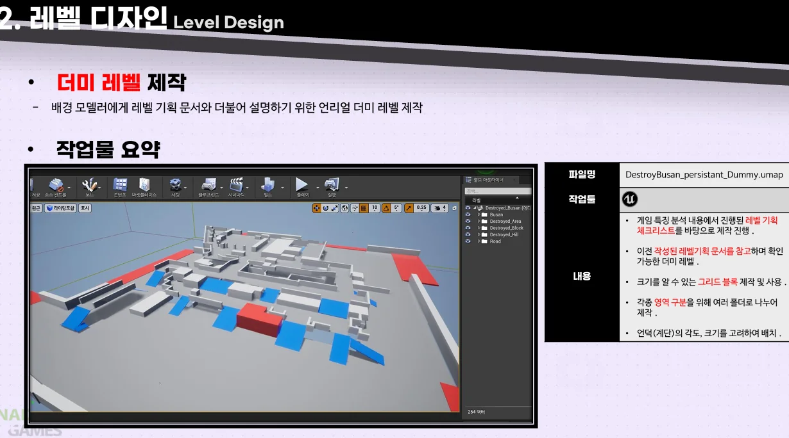

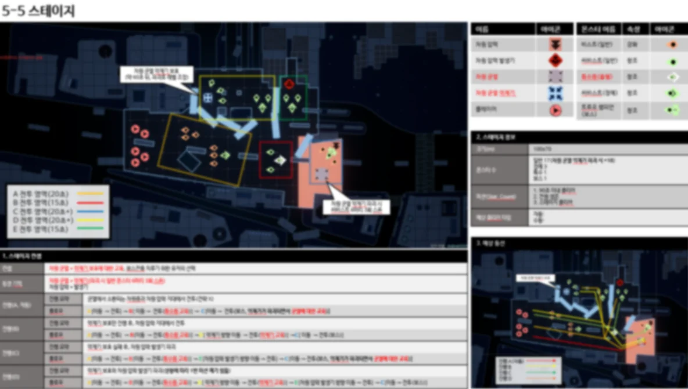